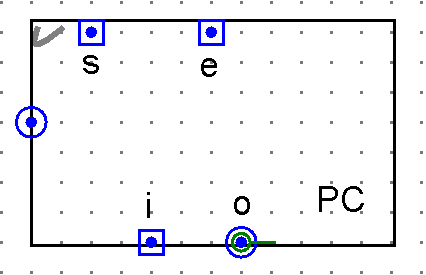
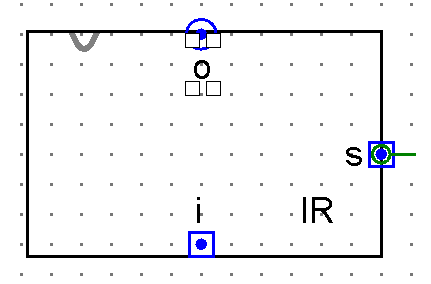

Three Parts Join the Bus
Sections 13.1 – 13.4 | Estimated time: ~45 minutes
13.1 You are still the fetch
What you have. A CPU that executes one instruction on its own. You set an 8-bit pin, ir, click clk_in 24 times, and the clock, the stepper and the control unit move the right values between R0–R3, TMP, the ALU, ACC and FLAGS. In a separate tab sits a 32-byte RAM with its MAR, built in Week 8 and never connected to anything.
What you can’t do. Run a program. A program is a list of instructions in memory, and something has to read the next one, hand it to the control unit, and remember where the one after that is. Right now that something is you: you read the instruction, you type it into ir, and you decide which one comes next.
What you can do by the end of this week. Put five bytes in your RAM, raise one pin, and click. The CPU reads its first instruction from address 0, executes it, reads the one at address 1, executes that, and carries on. Three parts make that possible, and every one of them is something you have already built:
- a program counter, PC, that holds the address of the next instruction — a
REGISTER_8BIT, from Week 5; - an instruction register, IR, that holds the instruction being executed — a
MEM_8BIT, also from Week 5; - the RAM, with its MAR — your
RAM_16X16, whole, from Week 8.
13.2 The program counter

s and e on top, up to the control unit; i and o on the bottom, down to the bus; reg, the stored byte, on the left for a probe.The program counter is a plain 8-bit register on the bus, exactly like R0. The only new thing is its appearance: it sits under the control unit, on the bottom run of the bus, so its i and o face down and its s and e face up. In your file it becomes a tab called PC_REGISTER — one REGISTER_8BIT inside, wired straight through, the same kind of wrapper as Week 10’s CPU_REGISTER and ACC_REGISTER.
Its job is to hold an address: the RAM address the CPU will read its next instruction from. Two things happen to it in every instruction:
- at step 1 it drives the bus, so the MAR can capture that address;
- at step 3 it captures a new value from the bus: its old value plus one.
So by the time an instruction is executing (steps 4 to 6), the PC already points at the next instruction. That is why it is called the program counter and not the “current instruction pointer”: it counts ahead. Week 14’s jumps work by giving it a different value instead of +1.
13.3 The instruction register

i on the bottom, from the bus; o on top, up into the control unit; s on the right. There is no e.The instruction register holds the byte the control unit is decoding. Last week that byte came from your ir input pin. This week the pin goes, and the IR’s output takes its wire: IR o → CONTROL_UNIT ir.
Notice what the IR is built from. It is a MEM_8BIT — eight one-bit cells and a shared set line — not a REGISTER_8BIT, because it never drives the bus. Its output goes to one place, the control unit, and nothing else ever needs that wire to let go. A register needs an enable and output buffers only if it shares an output wire. You have met this twice already: TMP (Week 10) feeds only BUS1, and the MAR (Week 8) feeds only the RAM’s two decoders. Both are MEM_8BIT too.
One consequence matters next page. A MEM_8BIT is a transparent latch: while its s is high, its output follows its input. So while the IR is being written, the control unit sees its ir input change underneath it.
13.4 The RAM joins whole
Your RAM_16X16 goes onto the CPU tab as one instance, unchanged. Its pins meet the bus in three places:
address← the bus, into the MAR, captured whensagoes high — the control unit’s newmar_sline;i← the bus, written into the selected byte whensgoes high — by hand this week, by ST in Week 14;o→ the bus, driven only whileeis high — the newram_eline.
In Week 8 you put a controlled buffer on the RAM’s output and were told it was there so the RAM could let go of a shared wire later. This is later. With ram_e low, that buffer floats, and R0, ACC or the PC can use the bus. The RAM is a bus driver like any register, and the one-driver rule from Week 10 applies to it.


s is tied to a constant, and the RAM’s i comes from a hand-set pin, RAM_in, instead of the bus.Here is every part on your CPU tab after this week, with the control lines that touch it and the steps that raise them. The table is generated from the same control table the widgets below run.
| Part | Built from | Drives the bus | Captures |
|---|---|---|---|
| Loading the table… | |||
Count the drivers: three parts and the register file — PC, RAM, ACC, and R0–R3 through REG_SELECT. Everything else captures, or only listens. That short list is the whole of what the control unit has to keep from colliding.
For the program counter and instruction register in a second voice, log into your Saylor CS301 account at the CS301 course page and open Unit 5: Designing a Processor. Its MIPS has a separate adder for PC + 4 and separate instruction and data paths; yours has one bus, and next page shows how it manages without the adder.
Where you are
You know what the PC, IR and RAM are built from and how each meets the bus. Next page: the three transfers that use them to fetch an instruction.